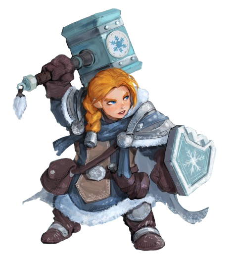
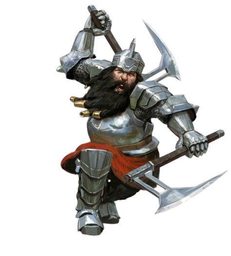

What are Dwarves?
Kingdoms rich in ancient ores and beautiful halls carved into the roots of rock and mountains. The Dwarves themselves have a Commitment to their clan and their tradition. With a warhammer at their back, a snide remark at their mouths and sweat in their brows they greet any situation with endurance, loyalty and hardwork.
Stout and Proud
Dwarves are known to be quite bold and hardy. Stout and skilled in many ways, from being warriors, to miners, to workers of stone and metal. We stand under 5 feet tall, but weigh as much as a human standing two feet taller. Our courage and endurance easily matching any of the taller folk. They have many things to say, even to the point of ignorance in the emotions of others, but that doesn't stop them from being loyal and trustworthy.
A long memory means a Long Grudge
Dwarves can live to be about 400 years. They often see the world in a very different light due to having lived so long. Their fixation on tradition helped them retain information from decades ago. Dwarves are solid and enduring like the mountains that they love so much. Weathering the passage of the times with endurance and stoicism that reminds you of bedrock. This often leads them to have lots of disagreements with each other and other races, as they do not hold kindly to being wronged. Their mind often hold grudges for both serious and trivial matters, to a fault.
Slow to Trust
dwarves are quite loyal. They stick true to their word and are decisive in action. This is to a point of stubbornness that many dwarves often have. They have a strong sense of justice. More often than not Dwarves do their best to keep to their own circle. However, once their loyalty is earned, it's hard for others to dissuade this loyalty.
All Dwarves are Burdened with Purpose that Defines
It is well known that all dwarves are very prideful of their craftmanship and their place in this world. Work for them is a way of life and their pride will not let them cease their life's work for anything less than death. They see this as following their gods footsteps. This purpose they choose to have urges them to learn all the different professions of the clan and to them, it is one's responsibility to oneself to learn all forms of crafts, no matter how complex.